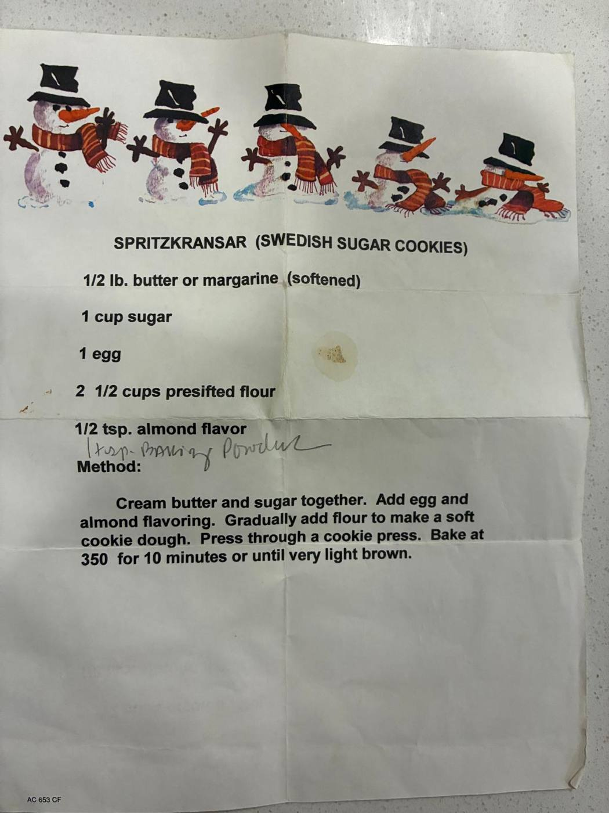

Desserts
Spritzkransar
Swedish Sugar Cookies
From the kitchen of Mom
Oven350°F
Bake10 min
ToolCookie press

Mom's original card · tap to enlarge
Ingredients
Method tap a step to mark it done
- Cream the butter and sugar together. Add the egg and almond flavoring.
- Mix the baking powder into the flour, then gradually add it to make a soft cookie dough.
- Press through a cookie press.
- Bake at 350°F for 10 minutes, or until very light brown.